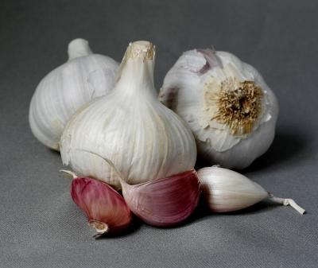

Garlic

| safety: | ★★★★ |
| traditional use: | ★★★★★ |
| research: | ★★★★★ |
| distribution: | global |
| objected symptom: | infections |
Use
When considering the use of herbal supplements, seek the advice of your doctor. You may also consider consulting a practitioner who is trained in the use of herbal/health supplements.
If you choose to use garlic, use it as directed on the package or as directed by your doctor, pharmacist, or other healthcare provider. Do not use more of this product than is recommended on the label.
Do not use different forms (cloves, tablets, oil, etc) of garlic at the same time without medical advice. Using different formulations together increases the risk of an overdose.
Do not crush, chew, or break an enteric coated pill. Swallow it whole. The pill has a special coating to protect your stomach. Breaking the pill will damage this coating.
Call your doctor if the condition you are treating with garlic does not improve, or if it gets worse while using this product.
Garlic can affect blood-clotting and may increase your risk of bleeding. If you need surgery, dental work, or a medical procedure, stop taking garlic at least 2 weeks ahead of time.
Store at room temperature away from moisture, heat, and light, or as directed on the package.
Side Effects
Get emergency medical help if you have any of these signs of an allergic reaction: hives; difficult breathing; swelling of your face, lips, tongue, or throat.
Although not all side effects are known, garlic is thought to be possibly safe when taken for a short period of time.
|